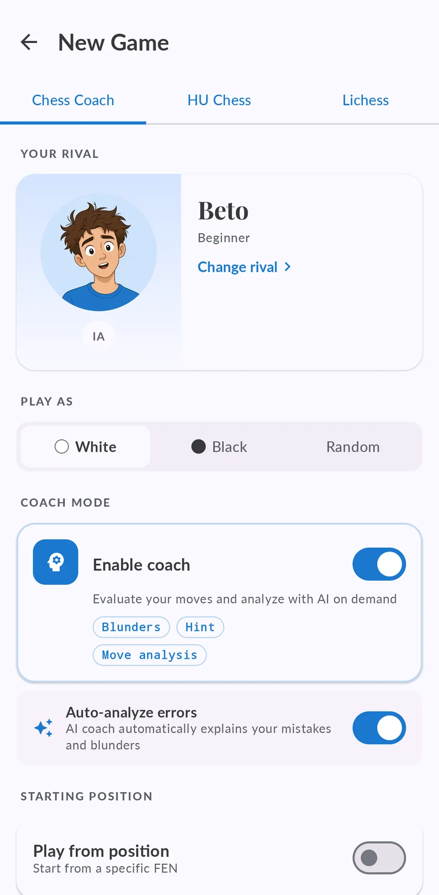

Jugar al ajedrez contra bots por niveles, de principiante a gran maestro
Veinte rivales con nombre, nivel y forma de jugar, desde uno que cuelga piezas hasta otro que no perdona nada. Elige el que está justo por encima de ti, y después de cada partida la app te enseña qué falló.

Los veinte rivales
Cinco niveles con cuatro rivales cada uno. El rating es la fuerza a la que juega cada uno; gánale unas cuantas veces y sube.
| Nivel | Rival | Rating | Cómo juega |
|---|---|---|---|
| Principiante | Beto | 750 | Recién está aprendiendo. Cuelga piezas. No te sientas mal si ganas en 10 jugadas. |
| Lola | 900 | Todavía aprende las aperturas. Deja piezas donde se las pueden comer. | |
| Ana | 1100 | Lenta y cuidadosa. Evita cambios salvo que le convengan. Difícil de apurar. | |
| Tomás | 1150 | Le gustan las casillas para caballo y los peones centrales. Te superará lento si lo dejas. | |
| Intermedio | Carmen | 1250 | Principiante de club. Ve las amenazas de una jugada y se le escapa el resto. |
| Diego | 1350 | Sin estilo marcado: juega la posición como viene. Un buen examen a este nivel. | |
| Sara | 1450 | Maniobras tranquilas, mejoras lentas. No esperes fuegos artificiales tácticos. | |
| Hugo | 1550 | Nivel de club sólido. Rara vez cuelga una pieza, pero las tácticas de dos jugadas se le escapan. | |
| Avanzado | Kenji | 1670 | Defiende con calma y contraataca cuando bajas la guardia. |
| Tariq | 1760 | Entrenado con partidas reales de club. Aperturas sólidas, y alguna táctica se le escapa. | |
| Ingrid | 1870 | Estructura limpia y pocos errores; hay que ganarle jugada a jugada. | |
| Pavel | 1950 | Jugador completo; castiga la mínima imprecisión. | |
| Maestro | Iván | 1750 | Jugador de club fuerte. Castiga los errores claros y se despista en posiciones tranquilas. |
| Marta | 1850 | Construye su posición ladrillo a ladrillo. Castiga imprecisiones a la larga. | |
| Javier | 1950 | Justo por debajo del nivel experto. Hace falta un plan de verdad para ganarle. | |
| Gabriel | 2150 | Jugador completo a las puertas del nivel maestro. Sin puntos débiles. | |
| Gran Maestro | Levon | 2600 | Fuerza de gran maestro. Un error claro suele bastar para perder. |
| Judit | 2650 | Casi nunca te deja nada. | |
| Hikaru | 2792 | Táctica y velocidad. Castiga la mínima imprecisión. | |
| Magnus | 2841 | Técnica infinita. El jefe final. |
Bots que pierden como personas, no como motores estropeados
La forma habitual de debilitar un motor es hacer que de vez en cuando juegue una mala jugada al azar, y eso no se parece en nada a un rival de verdad. Chess Coach lo hace de otra forma: los errores de un rival se eligen entre las jugadas que el propio motor estaba considerando, así que son los despistes creíbles de un jugador de ese nivel.
Los cuatro rivales del nivel avanzado son Maia, una red neuronal entrenada con millones de partidas online reales para predecir la jugada que haría un jugador de un nivel concreto. Abren, defienden y fallan como los jugadores de club. Los rivales de maestro y gran maestro son motores completos, limitados solo lo que pide su rating.

Después de la partida
Cada partida contra un bot va a tu lista, donde el motor marca las jugadas que te costaron algo y el coach con IA te las puede explicar. Eso es lo que convierte una partida perdida en lo siguiente que trabajar.
Preguntas
¿Es gratis jugar contra los bots?
¿Contra qué bot debería jugar?
¿Puedo jugar contra los bots sin conexión?
¿Hay bots que jueguen como personas?
Sigue entrenando
Llévate el coach contigo
Empieza gratis en iPhone, iPad o Android. Sin anuncios, y sin suscripción para jugar, analizar o hacer el primer curso.
Inicia sesión y tus partidas, ratings y progreso te siguen al otro dispositivo.

La portada, en un iPhone. La misma app en Android y en iPad.